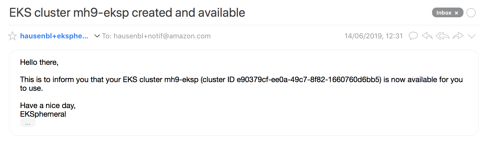
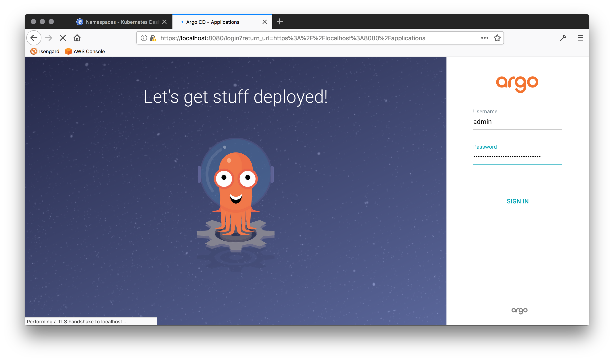

The EKSphemeral CLI¶
Info
Currently, the CLI binaries are available for both macOS and Linux platforms.
You can create, inspect, and prolong the lifetime of a cluster with the CLI as shown in the following.
Manual install¶
Note
You usually don't need to install the CLI manually, it should have been set up with the overall install. However, in cases where you want to access EKSphemeral from a machine other than the one you set it up originally or the CLI has been removed by someone or something, follow the steps here.
To manually install the binary CLI, for example on macOS, do:
1 2 3 | $ curl -sL https://github.com/mhausenblas/eksphemeral/releases/latest/download/eksp-macos -o eksp $ chmod +x eksp $ sudo mv ./eksp /usr/local/bin |
Now, let's check if there are already clusters are managed by EKSphemeral:
1 2 | $ eksp list No clusters found |
Since we just installed EKSphemeral, there are no clusters, yet. Let's change that.
Create clusters¶
The CLI allows you to create ephemeral EKS clusters with a single command, based on a simple JSON cluster spec file.
Basics¶
Let's create a cluster named mh9-eksp, with three worker nodes,
using Kubernetes version 1.12, with a 150 min timeout.
First, create a file cluster-spec.json with the following content:
1 2 3 4 5 6 7 8 9 10 | { "id": "", "name": "mh9-eksp", "numworkers": 3, "kubeversion": "1.12", "timeout": 150, "ttl": 150, "owner": "hausenbl+notif@amazon.com", "created": "" } |
Now you can use the create command like so:
1 2 3 4 5 6 7 8 9 10 11 12 13 14 15 16 17 18 19 20 21 22 | $ eksp create cluster-spec.json Trying to create a new ephemeral cluster ... ... using cluster spec cluster-spec.json Seems you have set 'us-east-2' as the target region, using this for all following operations I will now provision the EKS cluster mh9-eksp using AWS Fargate: [i] Running task eksctl Waiting for EKS cluster provisioning to complete. Allow some 15 min to complete, checking status every minute: ......... Successfully created data plane for cluster mh9-eksp using AWS Fargate and now moving on to the control plane in AWS Lambda and S3 ... Successfully created control plane entry for cluster mh9-eksp via AWS Lambda and Amazon S3 ... Now moving on to configure kubectl to point to your EKS cluster: Updated context arn:aws:eks:us-east-2:661776721573:cluster/mh9-eksp in /Users/hausenbl/.kube/config Your EKS cluster is now set up and configured: CURRENT NAME CLUSTER AUTHINFO NAMESPACE * arn:aws:eks:us-east-2:661776721573:cluster/mh9-eksp arn:aws:eks:us-east-2:661776721573:cluster/mh9-eksp arn:aws:eks:us-east-2:661776721573:cluster/mh9-eksp Note that it still can take up to 5 min until the worker nodes are available, check with the following command until you don't see the 'No resources found.' message anymore: kubectl get nodes |
Note
If no cluster spec is provided, a default cluster spec will be used along with the first security group of the default VPC.
Once the cluster is ready and you've verified your email addresses you should get a notification that looks something like the following:

The same is true at least five minutes before the cluster shuts down.
Tip
Above implicitly uses the base image.
If you want a few more things installed, such as the Kubernetes dashboard, ArgoCD, and App Mesh, use the eksctl:deluxe image as shown in the following.
Advanced cluster creation¶
You can also use the deluxe image, available via Quay.io, to create an ephemeral cluster with the Kubernetes Dashboard, ArgoCD, and AWS App Mesh (incl. Prometheus and Grafana) pre-installed.
Do the following to provision an ephemeral deluxe cluster:
1 2 3 4 5 6 7 8 9 10 11 | $ cat /tmp/eks-deluxe.json { "id": "", "name": "mh9-deluxe", "numworkers": 2, "kubeversion": "1.13", "timeout": 1440, "ttl": 1440, "owner": "hausenbl+notif@amazon.com", "created": "" } |
And then:
1 2 | $ EKSPHEMERAL_EKSCTL_IMG=deluxe eksp create /tmp/eks-deluxe.json ... |
This takes some 15 min and after that, to access the Kubernetes dashboard we need to 1. proxy the UI locally, and 2. sort out the access control bits.
First, launch the proxy to forward traffic to you local environment:
1 | $ kubectl proxy |
Next, let's sort out the access control bits:
First, create a service account eks-admin:
1 | $ kubectl -n kube-system create sa eks-admin |
... and give it cluster admin rights ...
1 2 3 | $ kubectl create clusterrolebinding eks-admin \ --clusterrole=cluster-admin \ --serviceaccount=kube-system:eks-admin |
... and finally, get the token for logging into the dashboard:
1 2 3 | $ kubectl -n kube-system describe secret \ $(kubectl -n kube-system get secret | grep eks-admin | awk '{print $1}') | grep ^token token: e****************************************************************************************************************g |
Finally, got to the dashboard and use the value of token from the last command to log into the dashboard:

Once you've completed the login, select the "Namespace" tab, left-hand side to check if all is as it should be, compare with the following screen shot:

To access the ArgoCD UI, do:
1 | $ kubectl port-forward svc/argocd-server -n argocd 8080:443
|
And now execute:
1 2 | $ kubectl get pods -n argocd -l app.kubernetes.io/name=argocd-server -o name | cut -d'/' -f 2 argocd-server-7c7c748648-nlrwq |
Finally, open localhost:8080 and log in with username admin and password using the pod name from the previous step, in my case argocd-server-7c7c748648-nlrwq:

Once you've completed the login, you are ready to configure your first app deployment, GitOps style:

That's it. Now let's see how we can introspect and manipulate EKSphemeral clusters.
List clusters¶
Next, let's check what clusters are managed by EKSphemeral:
1 2 3 | $ eksp list NAME ID KUBERNETES NUM WORKERS TIMEOUT TTL OWNER mh9-eksp e90379cf-ee0a-49c7-8f82-1660760d6bb5 v1.12 2 45 min 42 min hausenbl+notif@amazon.com |
Here, we get an tabular rendering of the clusters. We can use a cluster ID as follows to look up the spec of a particular cluster:
1 2 3 4 5 6 7 8 9 10 11 12 13 14 | $ eksp list e90379cf-ee0a-49c7-8f82-1660760d6bb5 ID: e90379cf-ee0a-49c7-8f82-1660760d6bb5 Name: mh9-eksp Kubernetes: v1.12 Worker nodes: 2 Timeout: 45 min TTL: 38 min Owner: hausenbl+notif@amazon.com Details: Status: ACTIVE Endpoint: https://A377918A0CA6D8BE793FF8BEC88964FE.sk1.us-east-2.eks.amazonaws.com Platform version: eks.2 VPC config: private access: false, public access: true IAM role: arn:aws:iam::661776721573:role/eksctl-mh9-eksp-cluster-ServiceRole-1HT8OAOGNNY2Y |
Prolong cluster lifetime¶
When you get a notification that one of your clusters is about to shut down or
really at any time before it shuts down, you can prolong the cluster lifetime
using the eksp prolong command.
Let's say we want to keep the cluster with the ID e90379cf-ee0a-49c7-8f82-1660760d6bb5 around
for 13 min longer. Here's what you would do:
1 2 3 4 | $ eksp prolong e90379cf-ee0a-49c7-8f82-1660760d6bb5 13 Trying to set the TTL of cluster e90379cf-ee0a-49c7-8f82-1660760d6bb5 to 13 minutes, starting now Successfully prolonged the lifetime of cluster e90379cf-ee0a-49c7-8f82-1660760d6bb5 for 13 minutes. |
Now let's check:
1 2 3 | $ eksp list NAME ID KUBERNETES NUM WORKERS TIMEOUT TTL OWNER mh9-eksp e90379cf-ee0a-49c7-8f82-1660760d6bb5 v1.12 2 13 min 13 min hausenbl+notif@amazon.com |
Note
The prolong command updates the timeout field of your cluster spec, that is,
the cluster TTL is counted from the moment you issue the prolong command,
taking the remaining cluster runtime into account.
Uninstall¶
To uninstall EKSphemeral, use the following command. This will remove the
control plane elements, that is, delete the Lambda functions and remove all
cluster specs from the EKSPHEMERAL_CLUSTERMETA_BUCKET S3 bucket:
1 2 3 4 5 6 7 8 9 10 11 | $ eksp uninstall Trying to uninstall EKSphemeral ... Taking down the EKSphemeral control plane, this might take a few minutes ... aws s3 rm s3://eks-cluster-meta --recursive aws cloudformation delete-stack --stack-name eksp Tear-down will complete within some 5 min. You can check the status manually, if you like, using 'make status' in the svc/ directory. Once you see a message saying something like 'Stack with id eksp does not exist' you know for sure it's gone :) Thanks for using EKSphemeral and hope to see ya soon ;) |
Warning
The service code bucket and the cluster metadata bucket are still around
after the uninstall command has completed. You can either manually delete
them or keep them around, to reuse them later.
This concludes the CLI walkthrough.